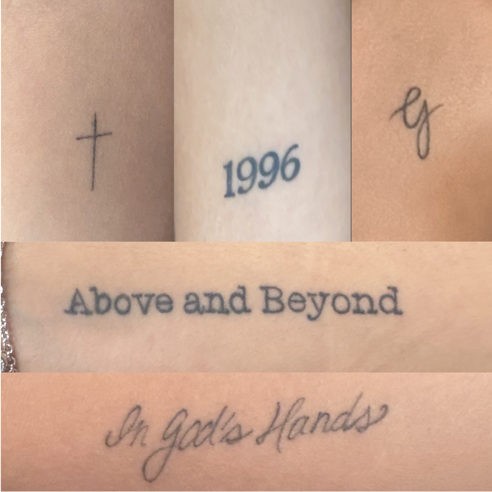

Here's a full rundown of every tattoo I have so far, where it's placed, and what it means to me. Each one marks a specific moment or relationship that shaped who I am.
I try to be intentional about what goes on my body permanently. Every piece has a story behind it, nothing is random or just for looks.
Fun fact: all four of my tattoos were done at the same shop over the course of about 2 years.
| Tattoo | Location | Meaning |
|---|---|---|
| "Above and Beyond" | Inner wrist | A sentiment my dad led me with, especially during hard times |
| "G" | Left Shoulder | Represents my grandpa Manuel and the values he instilled in me |
| 1996 | Inner bicep | The year my parents met and began their lives together |
| "In God's Hands" | Inner forearm | A quote in my mother's handwriting that reminds me of her |
| Cross | Inner forearm | A symbol of my faith and the values I strive to live by |
Thinking about getting your first tattoo? Take your time choosing something meaningful, you'll be looking at it forever and it has the possibility of guiding you.
